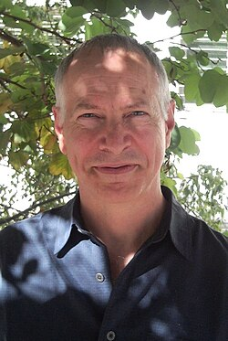

Robert Tarjan | |
|---|---|
 | |
| Born | Robert Endre Tarjan April 30, 1948 Pomona, California, U.S. |
| Education | California Institute of Technology (BS) Stanford University (MS, PhD) |
| Known for | Algorithms and data structures |
| Awards | Paris Kanellakis Award (1999) Turing Award (1986) Nevanlinna Prize (1982) |
| Scientific career | |
| Fields | Computer science |
| Institutions | Princeton University New York University Stanford University University of California, Berkeley Cornell University Microsoft Research Intertrust Technologies Hewlett-Packard Compaq NEC Research Bell Labs |
| Thesis | An Efficient Planarity Algorithm (1972) |
| Robert W. Floyd | |
Other academic advisors | Donald Knuth |
Doctoral students | |
| Website | www |
Robert Endre Tarjan (born April 30, 1948) is an American computer scientist and mathematician. He is the discoverer of several graph theory algorithms, including his strongly connected components algorithm, and co-inventor of both splay trees and Fibonacci heaps. Tarjan joined Princeton University as the James S. McDonnell Distinguished University Professor of Computer Science in 1985.[1] He and John Hopcroft won the 1986 ACM Turing Award.
He was born in Pomona, California. His father, George Tarjan, raised in Hungary,[2] was a child psychiatrist, specializing in intellectual disability, and ran a state hospital.[3] Robert Tarjan's younger brother James became a chess grandmaster.[4] As a child, Robert Tarjan read a lot of science fiction, and wanted to be an astronomer. He became interested in mathematics after reading Martin Gardner's mathematical games column in Scientific American. He became seriously interested in math in the eighth grade, thanks to a "very stimulating" teacher.[5]
While he was in high school, Tarjan got a job, where he worked with IBM punch card collators. He first worked with real computers while studying astronomy at the Summer Science Program in 1964.[3]
Tarjan obtained a Bachelor's degree in mathematics from the California Institute of Technology in 1969. At Stanford University, he received his master's degree in computer science in 1971 and a Ph.D. in computer science (with a minor in mathematics) in 1972. At Stanford, he was supervised by Robert Floyd[6] and Donald Knuth,[7] both highly prominent computer scientists, and his Ph.D. dissertation was An Efficient Planarity Algorithm. Tarjan selected computer science as his area of interest because he believed that computer science was a way of doing mathematics that could have a practical impact.[8]
Tarjan now lives in Princeton, NJ, and Silicon Valley. He is married to Nayla Rizk.[9] He has three daughters: Alice Tarjan, Sophie Zawacki, and Maxine Tarjan.[10]
Tarjan has been teaching at Princeton University since 1985.[8] He has also held academic positions at Cornell University (1972–73), University of California, Berkeley (1973–1975), Stanford University (1974–1980), and New York University (1981–1985). He has also been a fellow of the NEC Research Institute (1989–1997).[11] In April 2013 he joined Microsoft Research Silicon Valley in addition to the position at Princeton. In October 2014 he rejoined Intertrust Technologies as chief scientist.
Tarjan has worked at AT&T Bell Labs (1980–1989), Intertrust Technologies (1997–2001, 2014–present), Compaq (2002) and Hewlett Packard (2006–2013).
Tarjan is known for his pioneering work on graph theory algorithms and data structures. Some of his well-known algorithms include Tarjan's off-line least common ancestors algorithm, Tarjan's strongly connected components algorithm, and Tarjan's bridge-finding algorithm, and he was one of five co-authors of the median of medians linear-time selection algorithm. The Hopcroft–Tarjan planarity testing algorithm was the first linear-time algorithm for planarity testing.[12]
Tarjan has also developed important data structures such as the Fibonacci heap (a heap data structure consisting of a forest of trees), and the splay tree (a self-adjusting binary search tree; co-invented by Tarjan and Daniel Sleator). Another significant contribution was the analysis of the disjoint-set data structure; he was the first to prove the optimal runtime involving the inverse Ackermann function.[13]
Tarjan received the Turing Award jointly with John Hopcroft in 1986. The citation for the award states[11] that it was:
For fundamental achievements in the design and analysis of algorithms and data structures.
Tarjan was also elected an ACM Fellow in 1994. The citation for this award states:[14]
For seminal advances in the design and analysis of data structures and algorithms.
Some of the other awards for Tarjan include:
Tarjan's papers have been collectively cited over 94,000 times.[21] Among the most cited are:
Tarjan holds at least 18 U.S. patents.[7] These include:
{kind=link}